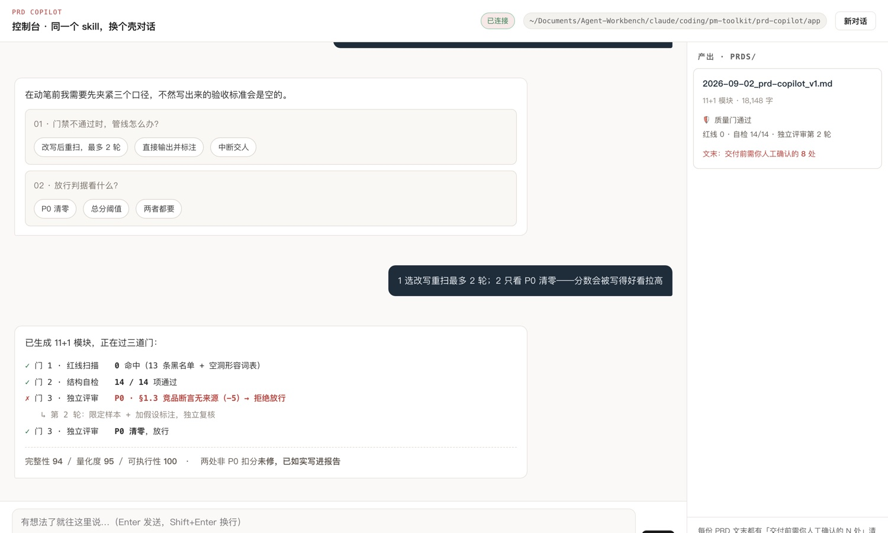
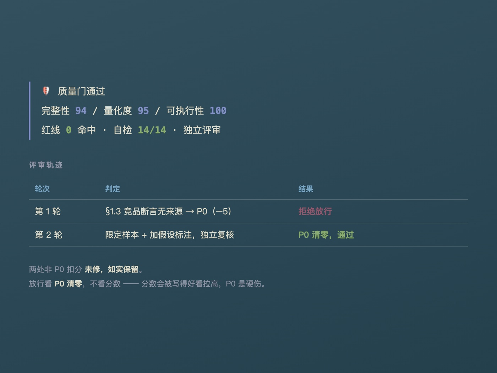
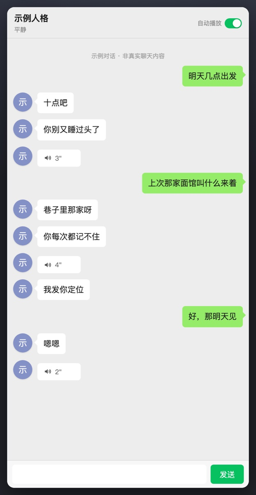
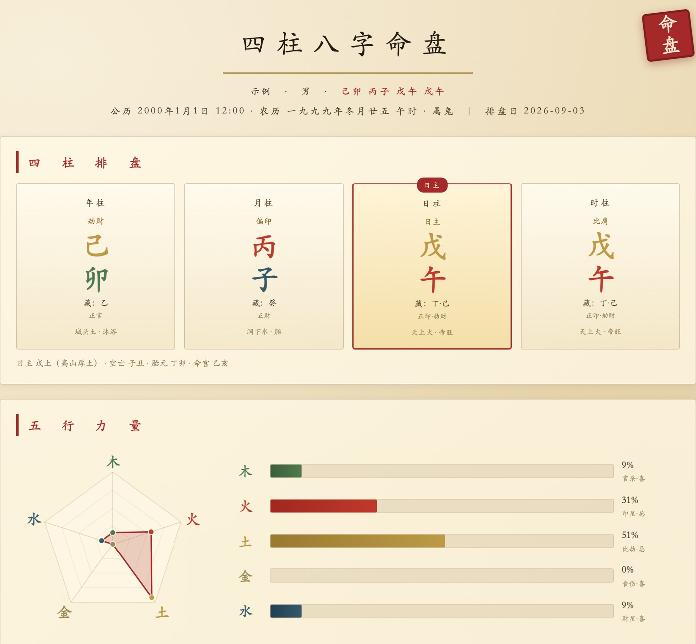

01 — 开源 · Claude Agent SDK
PRD Copilot
写 PRD 的痛点不是不会写格式，是 AI 写出来的东西看着完整、实际全是空洞形容词。所以我把重心放在生成之后。


02 — 本地离线 · Ollama + RAG + 语音克隆
数字分身
把「像一个人」拆成两件独立的事：语气归人格设定管，别瞎编归历史召回管。混在一起调好一个必坏另一个。
01人格与召回分离：改语气不影响事实，改检索不影响风格
02三级降级：bge 语义 → 字符级 TF-IDF → none，可用性不依赖单点
03脾气半衰期：情绪强度按时间衰减，存时间戳即可推算，不轮询
完整拆解 →

03 — 静态 Web · 零构建
墨卦
起点是一个开源八字 skill，功能完整，但只有装了命令行的人能用。我把同样的算法换成打开浏览器就能用的形态。
01零构建零依赖：没有构建产物就没有构建失败，十年后还能打开
02BYOK：AI 深读用用户自带密钥，只存本机；不填也能用规则引擎
03口径严格对齐原 skill：同一个人两处算出不同结果，产品就废了
完整拆解 →

